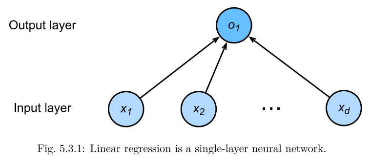

3.3. Concise Implementation of Linear Regression¶
This is chapter 3
Generating Data Sets¶
import torch
import numpy as np
def synthetic_data(w, b, num_examples):
'''generate y = Xw + b + noise'''
X = np.random.normal(scale=1, size=(num_examples, len(w)))
y = np.dot(X, w) + b
y += np.random.normal(scale=0.01, size=y.shape)
X = torch.from_numpy(X).float()
y = torch.from_numpy(y).float().reshape(-1, 1)
return X, y
true_w = torch.Tensor([2, -3.4])
true_b = 4.2
features, labels = synthetic_data(true_w, true_b, 1000)
Reading Data¶
from torch.utils.data import TensorDataset, DataLoader
def load_array(data_arrays, batch_size, is_train=True):
# dataset = TensorDataset(*(data_arrays[0], data_arrays[1]))
# dataset = TensorDataset(*(features, labels))
dataset = TensorDataset(*data_arrays)
dataloader = DataLoader(dataset=dataset, batch_size=batch_size, shuffle=True)
return dataloader
batch_size = 10
data_iter = load_array((features, labels), batch_size)
for X, y in data_iter:
print(X)
print(y)
break
tensor([[-1.3021, -0.4176],
[-1.1450, 1.1582],
[-1.8616, 2.1631],
[-2.1734, 1.6941],
[-0.8614, 0.3173],
[ 0.2438, -0.6012],
[ 0.7031, 1.1000],
[-1.2077, -1.6366],
[-0.8278, 0.8570],
[-1.2594, 1.0105]])
tensor([[ 3.0233],
[-2.0425],
[-6.8760],
[-5.8827],
[ 1.4049],
[ 6.7197],
[ 1.8577],
[ 7.3528],
[-0.3619],
[-1.7499]])
Define the Model¶
from IPython.display import Image
Image('../../images/linear_regression_is_single_layer_neural_network.png')

class LinearRegressionModel(torch.nn.Module):
def __init__(self):
super(LinearRegressionModel, self).__init__()
self.layer1 = torch.nn.Linear(2, 1, bias=True)
def forward(self, x):
y_pred = self.layer1(x)
return y_pred
net = LinearRegressionModel()
Initialize Model Parameters¶
net.layer1.weight.data = torch.Tensor(np.random.normal(size=(1,2), scale=0.01, loc=0))
net.layer1.bias.data = torch.Tensor([0])
Define the Loss Function¶
loss = torch.nn.MSELoss(reduction='sum')
Define the Optimization Algorithm¶
trainer = torch.optim.SGD(net.parameters(), lr=0.03)
Training¶
num_epochs = 10
for epoch in range(num_epochs):
for X, y in data_iter:
l = loss(net(X), y)
trainer.zero_grad()
l.backward()
trainer.step()
l_epoch = loss(net(features), labels)
print('epoch {}, loss {}'.format(epoch+1, l_epoch))
epoch 1, loss 0.11235816776752472
epoch 2, loss 0.11345624178647995
epoch 3, loss 0.13658374547958374
epoch 4, loss 0.11119771748781204
epoch 5, loss 0.10678188502788544
epoch 6, loss 0.1328425258398056
epoch 7, loss 0.11730636656284332
epoch 8, loss 0.13035058975219727
epoch 9, loss 0.10974349826574326
epoch 10, loss 0.1381644457578659